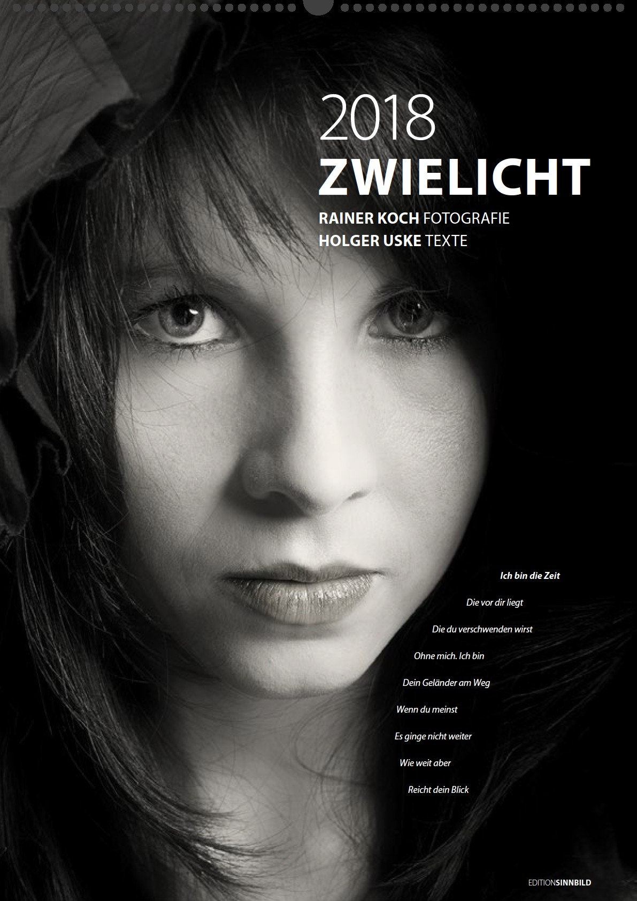
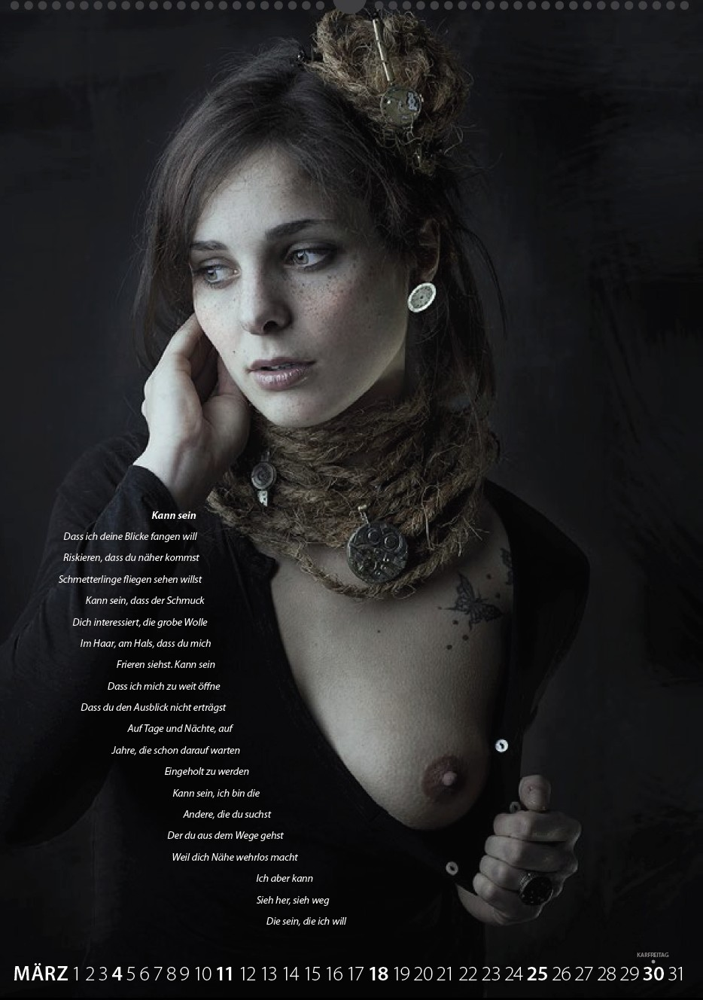
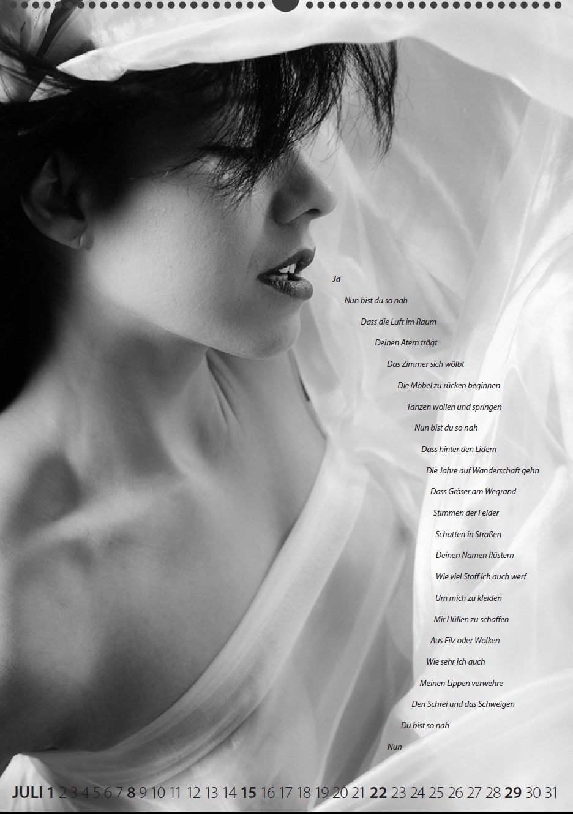
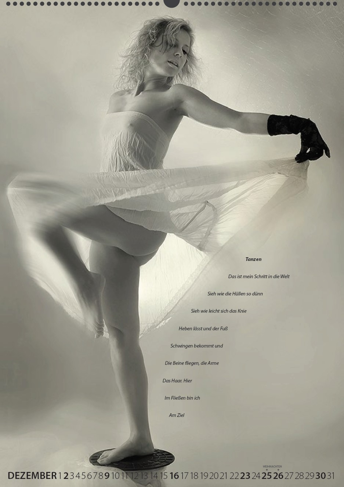

Mit Bildern von Rainer Koch und Lyrik von Holger Uske

Nach etwa zweijähriger Projektarbeit lag im Herbst 2017 genügend Material vor, um durch den Suhler Designer und Grafiker Andreas Kuhrt – der bereits mehrfach für den Südthüringer Literaturverein den Literaturkalender „Thüringer Ansichten" gestaltet hatte – einen Kalender kreieren zu lassen. Er vereint auf 12 Monatsblättern herausragende Arbeitsergebnisse des Fotografen aus Ohrdruf, jetzt in Minden zu Hause, zu denen Holger Uske lyrische Texte verfasste. Aus der Zwiesprache zwischen Bild und Text entwickelt sich eine besondere ästhetische Spannung, die ein Jahr lang bei allen Nutzern anregende Freude erzeigen soll.
Der Kalender wurde in einer Auflage von 50 Exemplaren hergestellt, ist in den Buchhandlungen in Suhl sowie in der städtischen Galerie in Suhl erhältlich und bei den Text- und Bildautoren.
Ich bin die Zeit
Die vor dir liegt
Die du verschwenden wirst
Ohne mich. Ich bin
Dein Geländer am Weg
Wenn du meinst
Es ginge nicht weiter
Wie weit aber
Reicht dein Blick

Kann sein
Dass ich deine Blicke fangen will
Riskieren, dass du näher kommst
Schmetterlinge fliegen sehen willst
Kann sein, dass der Schmuck
Dich interessiert, die grobe Wolle
Im Haar, am Hals, dass du mich
Frieren siehst. Kann sein
Dass ich mich zu weit öffne
Dass du den Ausblick nicht erträgst
Auf Tage und Nächte, auf
Jahre, die schon darauf warten
Eingeholt zu werden
Kann sein, ich bin die
Andere, die du suchst
Der du aus dem Wege gehst
Weil dich Nähe wehrlos macht
Ich aber kann
Sieh her, sieh weg
Die sein, die ich will
Ja
Nun bist du so nah
Dass die Luft im Raum
Deinen Atem trägt
Das Zimmer sich wölbt
Die Möbel zu rücken beginnen
Tanzen wollen und springen
Nun bist du so nah
Dass hinter den Lidern
Die Jahre auf Wanderschaft gehn
Dass Gräser am Wegrand
Stimmen der Felder
Schatten in Straßen
Deinen Namen flüstern
Wie viel Stoff ich auch werf
Um mich zu kleiden
Mir Hüllen zu schaffen
Aus Filz oder Wolken
Wie sehr ich auch
Meinen Lippen verwehre
Den Schrei und das Schweigen
Du bist so nah
Nun


Tanzen
Das ist mein Schritt in die Welt
Sieh wie die Hüllen so dünn
Sieh wie leicht sich das Knie
Heben lässt und der Fuß
Schwingen bekommt und
Die Beine fliegen, die Arme
Das Haar. Hier
Im Fließen bin ich
Am Ziel
Kalender erhältlich in Suhler Buchhandlungen und der Galerie im CCS.